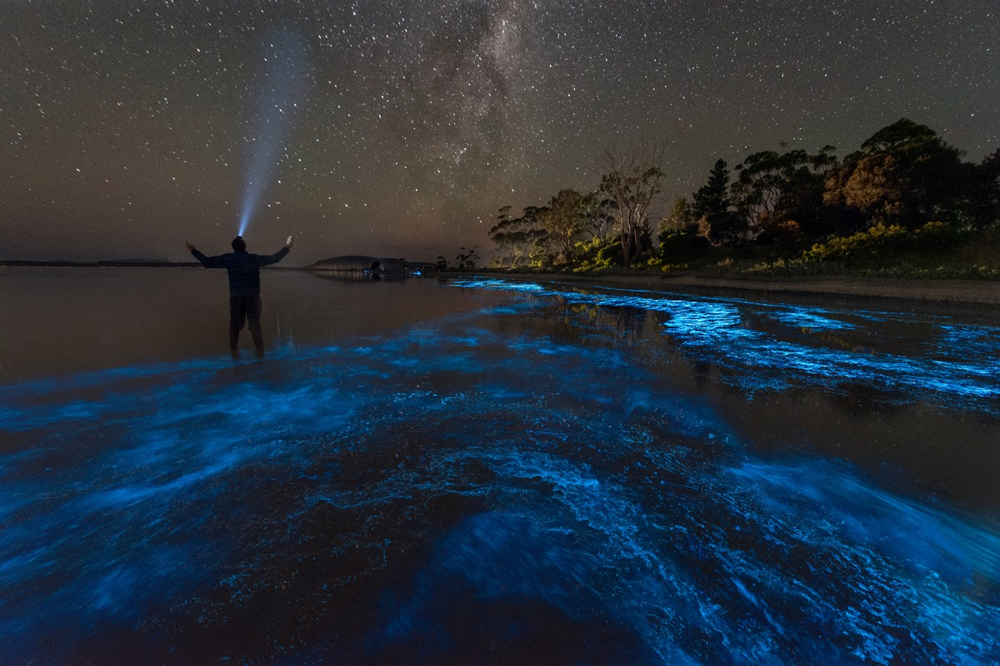

Em algumas praias do mundo, o mar parece ganhar luz própria durante a noite. Esse fenômeno é chamado de ondas bioluminescentes e acontece por causa de micro-organismos marinhos chamados fitoplâncton ou dinoflagelados.
Quando a água é agitada – seja pelo movimento das ondas, por barcos ou até por pessoas nadando – esses seres liberam uma reação química que produz um brilho azul intenso. O resultado é um espetáculo natural que transforma a praia em um verdadeiro céu estrelado.
Locais famosos por esse fenômeno são as Maldivas, a Baía de Mosquito em Porto Rico e até alguns pontos no Brasil, como praias do litoral do Rio de Janeiro e de Santa Catarina, quando as condições são ideais.

Mar bioluminescente em Maldivas.